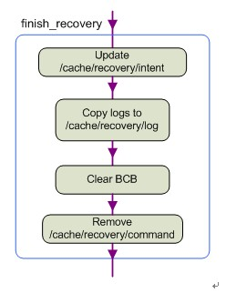

1. Android OTA upgrade principle and process analysis (6)---Recovery service process details
July 04, 2016 09:42:23 Blast - Bevis reading number: 364 Tags: ota
Personal Category: Android-OTA
Android system Recovery works using update.zip upgrade process analysis (six)---Recovery service process details
Reprinted from: http://blog.chinaunix.net/uid-22028566-id-3533855.html
The Recovery service is undoubtedly the most central part of the Recovery startup model. It does all the work of Recovery mode. The source files for the Recovery program are located at: /gingerbread0919/bootable/recovery/recovery.c.
1.1. 1. Recovery's three types of services:
Let's take a look at a large section of the comments at the beginning of this source file, which will help us understand the main features of the Recovery service. code show as below:
From the comments we can see that there are three main types of Recovery services:
FACTORY RESET, restore factory settings.
OTA INSTALL, our update.zip package upgrade.
ENCRYPTED FILE SYSTEM ENABLE/DISABLE, enables/disables the encrypted file system. The specific workflow of each type of service is detailed in the notes. We will explain the workflow of OTA INSTALL in detail below. The approximate processes of these three types of services are common, but different operations and different operational details. Let's look at the general flow of the Recovery service.
1.2. 2. The general process of the Recovery service:
Here we take the OTA INSTALL process as an example for specific analysis. And start from the call process diagram of the relevant function, as shown below:
We follow the flowchart analysis and start with the main function of recovery.c:
ui_init(): The Recovery service uses a simple ui (miniui) system based on framebuffer. This function simply initializes it. In the process of the Recovery service, it is mainly used to display a background image (installation or installation failure) and a progress bar (for displaying progress). In addition, two threads are started, one for processing the progress bar display (progress_thread) and the other for responding to the user's button (input_thread).
get_arg(): This function mainly does the work of get_arg() in the above figure going down to parse arg/v. We look at the process one by one.
- get_bootloader_message(): The main job is to read the BCB data block from the MISC partition into a temporary variable according to the partition's file format type (mtd or emmc).
- Then start to determine whether the Recovery service has a parameter with the command line (/sbin/recovery, which is not according to the existing logic), if not, read the recovery domain from the BCB. If the read fails, it is read from /cache/recovery/command and then. Thus the recovery field in the temporary variable of this BCB is updated. Before the temporary variable of this BCB is written back to the real BCB, the command field of the updated BCB temporary variable is "boot-recovery". The purpose of this is that if the upgrade fails (for example, if the upgrade is not completed, the system will be powered off), the system will enter Recovery mode after the restart, until the upgrade is completed.
- After each domain of this BCB temporary variable is updated, use set_bootloader_message() to write back to the real BCB block. This process can be summarized with a simple diagram, which is clearer:
parserargc/argv: parsing we get the parameters. Register the parsed command (register_update_command), in the following operation, it will judge step by step according to the value parsed in this step, and then perform the corresponding operation.
if (update_package): Determines whether update_package has a value. If it is, it indicates that the update package needs to be upgraded. At this time, install_package() is called (that is, the second phase of red in the figure). In this step you will be done installing the actual upgrade package. This is the most complex and the most essential part of upgrading the update.zip package. We analyze this process in detail in the next section. In order to understand the framework of the Recovery service from a macro perspective, we will skip this step first, assuming that the installation is complete. We then go down and see how Recovery will end the service step by step after the installation is complete and reboot to the new main system.
if(wipe_data/wipe_cache): This step is actually two steps. In the source code, it is first judged whether to erase the data partition (user data part), and then judge whether to erase the cache partition. It is worth noting that the erase partition must be erased when erasing the data partition. The data partition may not be erased in the case where only the cache partition is erased.
maybe_install_firmware_update(): This function is called if the upgrade package contains an update to /radio/hboot firmware. Check the source code to find out that there is this process in the annotation (OTA INSTALL). However, this function is not shown in the main function. It has not yet been discovered exactly where it is handled. But the process is the same as the one above. That is, 1 first writes the "boot-recovery" and "-wipe_cache" to the BCB and then formats the cache partition, and then writes the firmware image to the original cache partition. 2 Write the commands "update-radio/hboot" and "-wipe_cache" to the BCB, then start reinstalling the firmware and refreshing the firmware. 3 will then enter the end of the illustration, namely finish_recovery().
prompt_and_wait(): This function is called in a judgment. The implication is that if the installation fails (update.zip package error or verification signature failed), then wait for the user's input processing (such as through the key combination reboot, etc.).
finish_recovery(): This is the only way for Recovery to close and enter the Main System. The general process is as follows: 
- Pass the contents of the intent (string) as a parameter into the finish_recovery. If there is an intent to tell the Main System, write it to /cache/recovery/intent. The role of this intent is still unknown.
- Copy the log (/tmp/recovery.log) of the Recovery service in the memory file system to the cache (/cache/recovery/log) partition to tell what happened to the Main System after the restart.
- Erase the contents of the BCB data block in the MISC partition, so that after the system restarts, it does not enter the Recovery mode but enters the updated main system.
- Delete the /cache/recovery/command file. This step is also very important, because the bootloader will automatically retrieve this file after rebooting, and will enter Recovery mode if it is not deleted. The principle has been clearly stated above.
reboot(): This is a system call. In this step Recovery completes its service restart and enters the Main System. This restart is the same as the function that restarts the call to Recovery mode in the main system, but the direction is different. So the parameters are different. Check the source code to find that its restart mode is RB_AUTOBOOT. This is a system macro.
At this point, we have a general understanding of the entire process framework of the Recovery service. The following is the second phase of upgrading the update.zip package and the core of the Recovery service. That is the branch of red 2 in our legend.
We will explain this part in detail in the next article, the install_package function, the core part of the Recovery service.